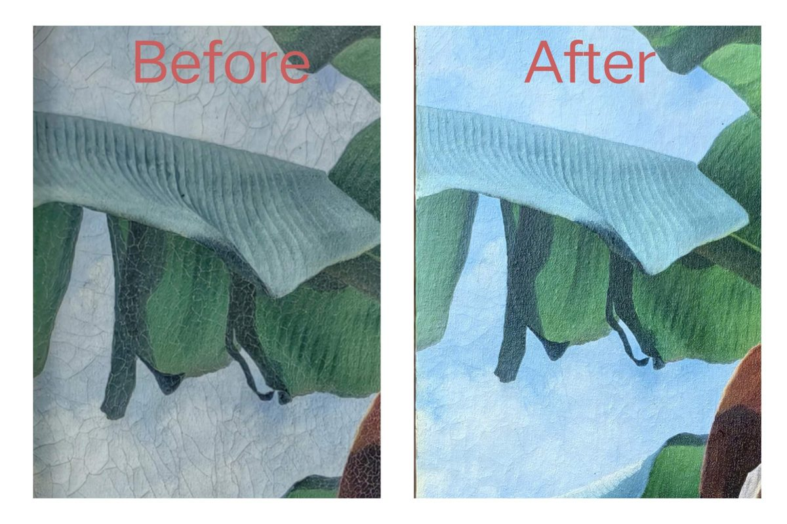

บริการอนุรักษ์และบูรณะงานศิลปะ · กรุงเทพฯ
ซ่อมภาพสีน้ำมัน ภาพสีน้ำ และภาพจิตรกรรม
ให้บริการประเมินและพูดคุยแนวทางซ่อม อนุรักษ์ หรือบูรณะภาพจิตรกรรมและรูปวาด โดยพิจารณาวัสดุ เทคนิค สภาพชั้นสี และลักษณะความเสียหายของงานแต่ละชิ้นก่อนเลือกวิธีดำเนินงาน
สอบถามและส่งภาพประเมิน ดูบริการทั้งหมดประเภทงานที่รับประเมิน

รับซ่อมภาพสีน้ำมัน
ประเมินภาพสีน้ำมันที่มีคราบสกปรก สีแตกร้าว สีเสื่อมสภาพ หรือปัญหาจากการเก็บรักษา โดยต้องพิจารณาสภาพจริงก่อนสรุปวิธีการที่เหมาะสม
รับซ่อมภาพสีน้ำ
ประเมินภาพสีน้ำและงานบนกระดาษที่มีคราบ สีซีดจาง หรือความเสียหายจากการเก็บรักษา เนื่องจากวัสดุแต่ละชนิดตอบสนองต่อความชื้นและการทำความสะอาดต่างกัน จึงไม่ควรทดลองใช้น้ำยาด้วยตนเอง
อนุรักษ์และบูรณะภาพจิตรกรรม
พิจารณาแนวทางดูแลพื้นผิวภาพและความเสียหายตามสภาพของงาน โดยคำนึงถึงการรักษาสภาพเดิมของชิ้นงาน ไม่ใช้วิธีเดียวกับภาพทุกประเภท
ภาพมีอาการเฉพาะ เช่น ขึ้นรา สีหลุดร่อน หรือวานิชเหลือง? ดู ภาพวาดเสียหาย ควรทำอย่างไร
วิธีส่งภาพเพื่อประเมินเบื้องต้น
- ถ่ายภาพเต็มชิ้นงานให้เห็นภาพรวมชัดเจน
- ถ่ายภาพระยะใกล้ของบริเวณที่เสียหาย เช่น คราบ สีแตกร้าว หรือสีหลุด
- ถ้าทำได้อย่างปลอดภัย ให้ถ่ายด้านหลังและขอบภาพเพิ่มเติม
- แจ้งขนาดโดยประมาณ อายุของภาพเท่าที่ทราบ และประวัติการเก็บรักษา
การประเมินจากภาพถ่ายเป็นเพียงการพิจารณาเบื้องต้น บางกรณีจำเป็นต้องตรวจสภาพจริงก่อนกำหนดวิธีการ ระยะเวลา และค่าใช้จ่าย ไม่ควรทำความสะอาดหรือใช้สารเคมีกับภาพก่อนทราบสภาพวัสดุ
เกี่ยวกับผู้ให้บริการ
ทศพล ยิ่งผล (Todsapol Yingphol) เป็นศิลปินและช่างอนุรักษ์อิสระ มีประสบการณ์ด้านการอนุรักษ์และบูรณะงานศิลปะมากกว่า 7 ปี และสำเร็จการศึกษาระดับปริญญาตรี สาขาทัศนศิลป์ (จิตรกรรม) จากวิทยาลัยเพาะช่าง มหาวิทยาลัยเทคโนโลยีราชมงคลรัตนโกสินทร์
ติดต่อสอบถามงาน
ส่งภาพและรายละเอียดเพื่อพูดคุยแนวทางประเมินเบื้องต้นได้ทาง LINE หรือ Instagram
LINE: pao6509
โทร: 080-129-9680
Instagram: todsapol.yingphol